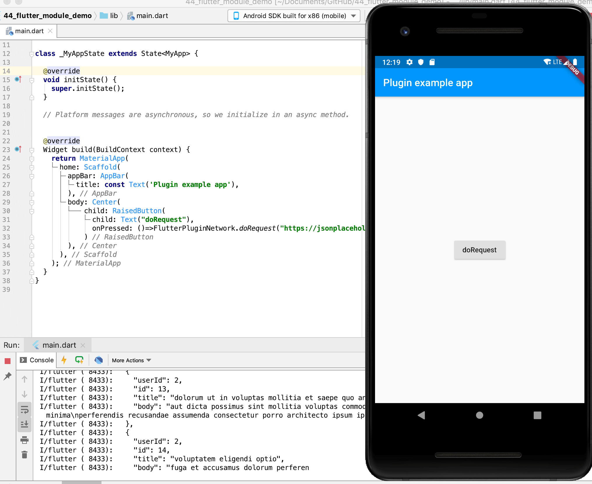
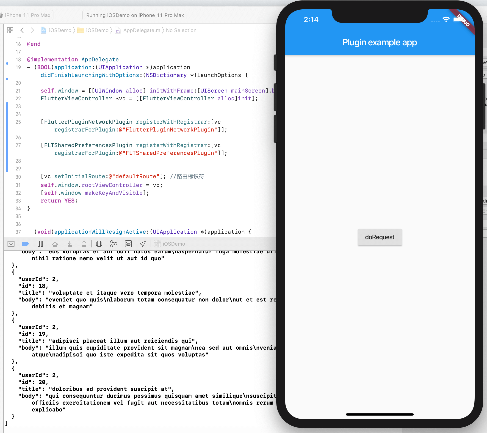
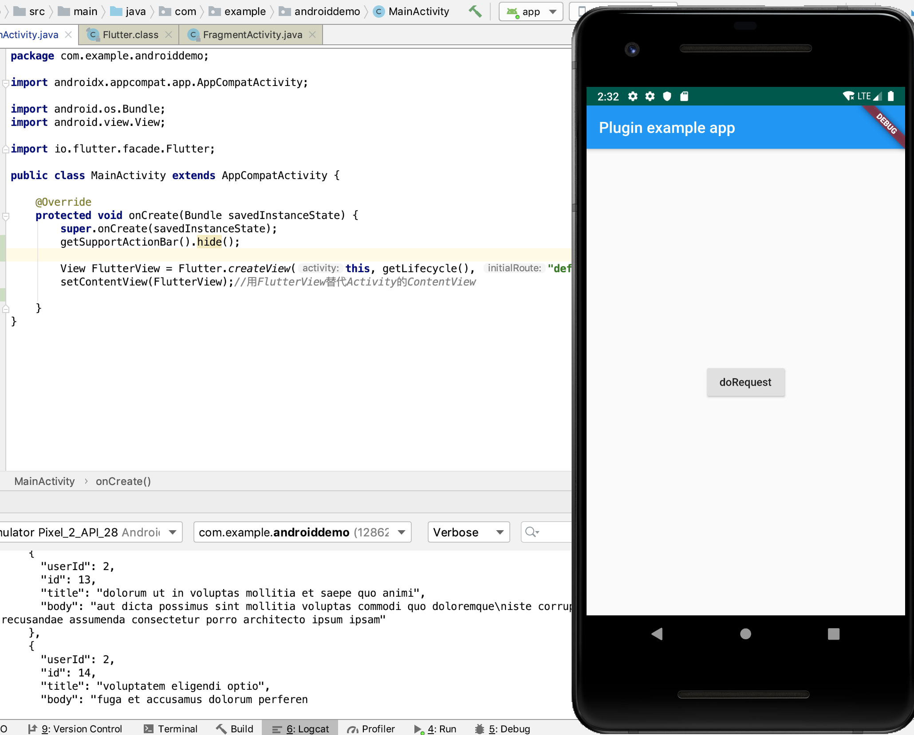

- 00 开篇词 为什么每一位大前端从业者都应该学习Flutter？.md
- 01 预习篇 · 从0开始搭建Flutter工程环境.md
- 02 预习篇 · Dart语言概览.md
- 03 深入理解跨平台方案的历史发展逻辑.md
- 04 Flutter区别于其他方案的关键技术是什么？.md
- 05 从标准模板入手，体会Flutter代码是如何运行在原生系统上的.md
- 06 基础语法与类型变量：Dart是如何表示信息的？.md
- 07 函数、类与运算符：Dart是如何处理信息的？.md
- 08 综合案例：掌握Dart核心特性.md
- 09 Widget，构建Flutter界面的基石.md
- 10 Widget中的State到底是什么？.md
- 11 提到生命周期，我们是在说什么？.md
- 12 经典控件（一）：文本、图片和按钮在Flutter中怎么用？.md
- 13 经典控件（二）：UITableView_ListView在Flutter中是什么？.md
- 14 经典布局：如何定义子控件在父容器中排版的位置？.md
- 15 组合与自绘，我该选用何种方式自定义Widget？.md
- 16 从夜间模式说起，如何定制不同风格的App主题？.md
- 17 依赖管理（一）：图片、配置和字体在Flutter中怎么用？.md
- 18 依赖管理（二）：第三方组件库在Flutter中要如何管理？.md
- 19 用户交互事件该如何响应？.md
- 20 关于跨组件传递数据，你只需要记住这三招.md
- 21 路由与导航，Flutter是这样实现页面切换的.md
- 22 如何构造炫酷的动画效果？.md
- 23 单线程模型怎么保证UI运行流畅？.md
- 24 HTTP网络编程与JSON解析.md
- 25 本地存储与数据库的使用和优化.md
- 26 如何在Dart层兼容Android_iOS平台特定实现？（一）.md
- 27 如何在Dart层兼容Android_iOS平台特定实现？（二）.md
- 28 如何在原生应用中混编Flutter工程？.md
- 29 混合开发，该用何种方案管理导航栈？.md
- 30 为什么需要做状态管理，怎么做？.md
- 31 如何实现原生推送能力？.md
- 32 适配国际化，除了多语言我们还需要注意什么_.md
- 33 如何适配不同分辨率的手机屏幕？.md
- 34 如何理解Flutter的编译模式？.md
- 35 Hot Reload是怎么做到的？.md
- 36 如何通过工具链优化开发调试效率？.md
- 37 如何检测并优化Flutter App的整体性能表现？.md
- 38 如何通过自动化测试提高交付质量？.md
- 39 线上出现问题，该如何做好异常捕获与信息采集？.md
- 40 衡量Flutter App线上质量，我们需要关注这三个指标.md
- 41 组件化和平台化，该如何组织合理稳定的Flutter工程结构？.md
- 42 如何构建高效的Flutter App打包发布环境？.md
- 43 如何构建自己的Flutter混合开发框架（一）？.md
- 44 如何构建自己的Flutter混合开发框架（二）？.md
- 特别放送 温故而知新，与你说说专栏的那些思考题.md
- 结束语 勿畏难，勿轻略.md
44 如何构建自己的Flutter混合开发框架（二）？
你好，我是陈航。
在上一篇文章中，我从工程架构与工作模式两个层面，与你介绍了设计Flutter混合框架需要关注的基本设计原则，即确定分工边界。
在工程架构维度，由于Flutter模块作为原生工程的一个业务依赖，其运行环境是由原生工程提供的，因此我们需要将它们各自抽象为对应技术栈的依赖管理方式，以分层依赖的方式确定二者的边界。
而在工作模式维度，考虑到Flutter模块开发是原生开发的上游，因此我们只需要从其构建产物的过程入手，抽象出开发过程中的关键节点和高频节点，以命令行的形式进行统一管理。构建产物是Flutter模块的输出，同时也是原生工程的输入，一旦产物完成构建，我们就可以接入原生开发的工作流了。
可以看到，在Flutter混合框架中，Flutter模块与原生工程是相互依存、互利共赢的关系：
- Flutter跨平台开发效率高，渲染性能和多端体验一致性好，因此在分工上主要专注于实现应用层的独立业务（页面）的渲染闭环；
- 而原生开发稳定性高，精细化控制力强，底层基础能力丰富，因此在分工上主要专注于提供整体应用架构，为Flutter模块提供稳定的运行环境及对应的基础能力支持。
那么，在原生工程中为Flutter模块提供基础能力支撑的过程中，面对跨技术栈的依赖管理，我们该遵循何种原则呢？对于Flutter模块及其依赖的原生插件们，我们又该如何以标准的原生工程依赖形式进行组件封装呢？
在今天的文章中，我就通过一个典型案例，与你讲述这两个问题的解决办法。
原生插件依赖管理原则
在前面第26和31篇文章里，我与你讲述了为Flutter应用中的Dart代码提供原生能力支持的两种方式，即：在原生工程中的Flutter应用入口注册原生代码宿主回调的轻量级方案，以及使用插件工程进行独立拆分封装的工程化解耦方案。
无论使用哪种方式，Flutter应用工程都为我们提供了一体化的标准解决方案，能够在集成构建时自动管理原生代码宿主及其相应的原生依赖，因此我们只需要在应用层使用pubspec.yaml文件去管理Dart的依赖。
但对于混合工程而言，依赖关系的管理则会复杂一些。这是因为，与Flutter应用工程有着对原生组件简单清晰的单向依赖关系不同，混合工程对原生组件的依赖关系是多向的：Flutter模块工程会依赖原生组件，而原生工程的组件之间也会互相依赖。
如果继续让Flutter的工具链接管原生组件的依赖关系，那么整个工程就会陷入不稳定的状态之中。因此，对于混合工程的原生依赖，Flutter模块并不做介入，完全交由原生工程进行统一管理。而Flutter模块工程对原生工程的依赖，体现在依赖原生代码宿主提供的底层基础能力的原生插件上。
接下来，我就以网络通信这一基础能力为例，与你展开说明原生工程与Flutter模块工程之间应该如何管理依赖关系。
网络插件依赖管理实践
在第24篇文章“HTTP网络编程与JSON解析”中，我与你介绍了在Flutter中，我们可以通过HttpClient、http与dio这三种通信方式，实现与服务端的数据交换。
但在混合工程中，考虑到其他原生组件也需要使用网络通信能力，所以通常是由原生工程来提供网络通信功能的。因为这样不仅可以在工程架构层面实现更合理的功能分治，还可以统一整个App内数据交换的行为。比如，在网络引擎中为接口请求增加通用参数，或者是集中拦截错误等。
关于原生网络通信功能，目前市面上有很多优秀的第三方开源SDK，比如iOS的AFNetworking和Alamofire、Android的OkHttp和Retrofit等。考虑到AFNetworking和OkHttp在各自平台的社区活跃度相对最高，因此我就以它俩为例，与你演示混合工程的原生插件管理方法。
网络插件接口封装
要想搞清楚如何管理原生插件，我们需要先使用方法通道来建立Dart层与原生代码宿主之间的联系。
原生工程为Flutter模块提供原生代码能力，我们同样需要使用Flutter插件工程来进行封装。关于这部分内容，我在第31和39篇文章中，已经分别为你演示了推送插件和数据上报插件的封装方法，你也可以再回过头来复习下相关内容。所以，今天我就不再与你过多介绍通用的流程和固定的代码声明部分了，而是重点与你讲述与接口相关的实现细节。
首先，我们来看看Dart代码部分。
对于插件工程的Dart层代码而言，由于它仅仅是原生工程的代码宿主代理，所以这一层的接口设计比较简单，只需要提供一个可以接收请求URL和参数，并返回接口响应数据的方法doRequest即可：
class FlutterPluginNetwork {
...
static Future<String> doRequest(url,params) async {
//使用方法通道调用原生接口doRequest，传入URL和param两个参数
final String result = await _channel.invokeMethod('doRequest', {
"url": url,
"param": params,
});
return result;
}
}
Dart层接口封装搞定了，我们再来看看接管真实网络调用的Android和iOS代码宿主如何响应Dart层的接口调用。
我刚刚与你提到过，原生代码宿主提供的基础通信能力是基于AFNetworking（iOS）和OkHttp（Android）做的封装，所以为了在原生代码中使用它们，我们首先需要分别在flutter_plugin_network.podspec和build.gradle文件中将工程对它们的依赖显式地声明出来：
在flutter_plugin_network.podspec文件中，声明工程对AFNetworking的依赖：
Pod::Spec.new do |s|
...
s.dependency 'AFNetworking'
end
在build.gradle文件中，声明工程对OkHttp的依赖：
dependencies {
implementation "com.squareup.okhttp3:okhttp:4.2.0"
}
然后，我们需要在原生接口FlutterPluginNetworkPlugin类中，完成例行的初始化插件实例、绑定方法通道工作。
最后，我们还需要在方法通道中取出对应的URL和query参数，为doRequest分别提供AFNetworking和OkHttp的实现版本。
对于iOS的调用而言，由于AFNetworking的网络调用对象是AFHTTPSessionManager类，所以我们需要这个类进行实例化，并定义其接口返回的序列化方式（本例中为字符串）。然后剩下的工作就是用它去发起网络请求，使用方法通道通知Dart层执行结果了：
@implementation FlutterPluginNetworkPlugin
...
//方法通道回调
- (void)handleMethodCall:(FlutterMethodCall*)call result:(FlutterResult)result {
//响应doRequest方法调用
if ([@"doRequest" isEqualToString:call.method]) {
//取出query参数和URL
NSDictionary *arguments = call.arguments[@"param"];
NSString *url = call.arguments[@"url"];
[self doRequest:url withParams:arguments andResult:result];
} else {
//其他方法未实现
result(FlutterMethodNotImplemented);
}
}
//处理网络调用
- (void)doRequest:(NSString *)url withParams:(NSDictionary *)params andResult:(FlutterResult)result {
//初始化网络调用实例
AFHTTPSessionManager *manager = [AFHTTPSessionManager manager];
//定义数据序列化方式为字符串
manager.responseSerializer = [AFHTTPResponseSerializer serializer];
NSMutableDictionary *newParams = [params mutableCopy];
//增加自定义参数
newParams[@"ppp"] = @"yyyy";
//发起网络调用
[manager GET:url parameters:params progress:nil success:^(NSURLSessionDataTask * _Nonnull task, id _Nullable responseObject) {
//取出响应数据，响应Dart调用
NSString *string = [[NSString alloc] initWithData:responseObject encoding:NSUTF8StringEncoding];
result(string);
} failure:^(NSURLSessionDataTask * _Nullable task, NSError * _Nonnull error) {
//通知Dart调用失败
result([FlutterError errorWithCode:@"Error" message:error.localizedDescription details:nil]);
}];
}
@end
Android的调用也类似，OkHttp的网络调用对象是OkHttpClient类，所以我们同样需要这个类进行实例化。OkHttp的默认序列化方式已经是字符串了，所以我们什么都不用做，只需要URL参数加工成OkHttp期望的格式，然后就是用它去发起网络请求，使用方法通道通知Dart层执行结果了：
public class FlutterPluginNetworkPlugin implements MethodCallHandler {
...
@Override
//方法通道回调
public void onMethodCall(MethodCall call, Result result) {
//响应doRequest方法调用
if (call.method.equals("doRequest")) {
//取出query参数和URL
HashMap param = call.argument("param");
String url = call.argument("url");
doRequest(url,param,result);
} else {
//其他方法未实现
result.notImplemented();
}
}
//处理网络调用
void doRequest(String url, HashMap<String, String> param, final Result result) {
//初始化网络调用实例
OkHttpClient client = new OkHttpClient();
//加工URL及query参数
HttpUrl.Builder urlBuilder = HttpUrl.parse(url).newBuilder();
for (String key : param.keySet()) {
String value = param.get(key);
urlBuilder.addQueryParameter(key,value);
}
//加入自定义通用参数
urlBuilder.addQueryParameter("ppp", "yyyy");
String requestUrl = urlBuilder.build().toString();
//发起网络调用
final Request request = new Request.Builder().url(requestUrl).build();
client.newCall(request).enqueue(new Callback() {
@Override
public void onFailure(Call call, final IOException e) {
//切换至主线程，通知Dart调用失败
registrar.activity().runOnUiThread(new Runnable() {
@Override
public void run() {
result.error("Error", e.toString(), null);
}
});
}
@Override
public void onResponse(Call call, final Response response) throws IOException {
//取出响应数据
final String content = response.body().string();
//切换至主线程，响应Dart调用
registrar.activity().runOnUiThread(new Runnable() {
@Override
public void run() {
result.success(content);
}
});
}
});
}
}
需要注意的是，由于方法通道是非线程安全的，所以原生代码与Flutter之间所有的接口调用必须发生在主线程。而OktHtp在处理网络请求时，由于涉及非主线程切换，所以需要调用runOnUiThread方法以确保回调过程是在UI线程中执行的，否则应用可能会出现奇怪的Bug，甚至是Crash。
有些同学可能会比较好奇，为什么doRequest的Android实现需要手动切回UI线程，而iOS实现则不需要呢？这其实是因为doRequest的iOS实现背后依赖的AFNetworking，已经在数据回调接口时为我们主动切换了UI线程，所以我们自然不需要重复再做一次了。
在完成了原生接口封装之后，Flutter工程所需的网络通信功能的接口实现，就全部搞定了。
Flutter模块工程依赖管理
通过上面这些步骤，我们以插件的形式提供了原生网络功能的封装。接下来，我们就需要在Flutter模块工程中使用这个插件，并提供对应的构建产物封装，提供给原生工程使用了。这部分内容主要包括以下3大部分：
- 第一，如何使用FlutterPluginNetworkPlugin插件，也就是模块工程功能如何实现；
- 第二，模块工程的iOS构建产物应该如何封装，也就是原生iOS工程如何管理Flutter模块工程的依赖；
- 第三，模块工程的Android构建产物应该如何封装，也就是原生Android工程如何管理Flutter模块工程的依赖。
接下来，我们具体看看每部分应该如何实现。
模块工程功能实现
为了使用FlutterPluginNetworkPlugin插件实现与服务端的数据交换能力，我们首先需要在pubspec.yaml文件中，将工程对它的依赖显示地声明出来：
flutter_plugin_network:
git:
url: https://github.com/cyndibaby905/44_flutter_plugin_network.git
然后，我们还得在main.dart文件中为它提供一个触发入口。在下面的代码中，我们在界面上展示了一个RaisedButton按钮，并在其点击回调函数时，使用FlutterPluginNetwork插件发起了一次网络接口调用，并把网络返回的数据打印到了控制台上：
RaisedButton(
child: Text("doRequest"),
//点击按钮发起网络请求，打印数据
onPressed:()=>FlutterPluginNetwork.doRequest("https://jsonplaceholder.typicode.com/posts", {'userId':'2'}).then((s)=>print('Result:$s')),
)
运行这段代码，点击doRequest按钮，观察控制台输出，可以看到，接口返回的数据信息能够被正常打印，证明Flutter模块的功能表现是完全符合预期的。

图1 Flutter模块工程运行示例
构建产物应该如何封装？
我们都知道，模块工程的Android构建产物是aar，iOS构建产物是Framework。而在第28和42篇文章中，我与你介绍了不带插件依赖的模块工程构建产物的两种封装方案，即手动封装方案与自动化封装方案。这两种封装方案，最终都会输出同样的组织形式（Android是aar，iOS则是带podspec的Framework封装组件）。
如果你已经不熟悉这两种封装方式的具体操作步骤了，可以再复习下这两篇文章的相关内容。接下来，我重点与你讲述的问题是：如果我们的模块工程存在插件依赖，封装过程是否有区别呢？
答案是，对于模块工程本身而言，这个过程没有区别；但对于模块工程的插件依赖来说，我们需要主动告诉原生工程，哪些依赖是需要它去管理的。
由于Flutter模块工程把所有原生的依赖都交给了原生工程去管理，因此其构建产物并不会携带任何原生插件的封装实现，所以我们需要遍历模块工程所使用的原生依赖组件们，为它们逐一生成插件代码对应的原生组件封装。
在第18篇文章“依赖管理（二）：第三方组件库在Flutter中要如何管理？”中，我与你介绍了Flutter工程管理第三方依赖的实现机制，其中.packages文件存储的是依赖的包名与系统缓存中的包文件路径。
类似的，插件依赖也有一个类似的文件进行统一管理，即.flutter-plugins。我们可以通过这个文件，找到对应的插件名字（本例中即为flutter_plugin_network）及缓存路径：
flutter_plugin_network=/Users/hangchen/Documents/flutter/.pub-cache/git/44_flutter_plugin_network-9b4472aa46cf20c318b088573a30bc32c6961777/
插件缓存本身也可以被视为一个Flutter模块工程，所以我们可以采用与模块工程类似的办法，为它生成对应的原生组件封装。
对于iOS而言，这个过程相对简单些，所以我们先来看看模块工程的iOS构建产物封装过程。
iOS构建产物应该如何封装？
在插件工程的ios目录下，为我们提供了带podspec文件的源码组件，podspec文件提供了组件的声明（及其依赖），因此我们可以把这个目录下的文件拷贝出来，连同Flutter模块组件一起放到原生工程中的专用目录，并写到Podfile文件里。
原生工程会识别出组件本身及其依赖，并按照声明的依赖关系依次遍历，自动安装：
#Podfile
target 'iOSDemo' do
pod 'Flutter', :path => 'Flutter'
pod 'flutter_plugin_network', :path => 'flutter_plugin_network'
end
然后，我们就可以像使用不带插件依赖的模块工程一样，把它引入到原生工程中，为其设置入口，在FlutterViewController中展示Flutter模块的页面了。
不过需要注意的是，由于FlutterViewController并不感知这个过程，因此不会主动初始化项目中的插件，所以我们还需要在入口处手动将工程里所有的插件依次声明出来：
//AppDelegate.m:
@implementation AppDelegate
- (BOOL)application:(UIApplication *)application didFinishLaunchingWithOptions:(NSDictionary *)launchOptions {
self.window = [[UIWindow alloc] initWithFrame:[UIScreen mainScreen].bounds];
//初始化Flutter入口
FlutterViewController *vc = [[FlutterViewController alloc]init];
//初始化插件
[FlutterPluginNetworkPlugin registerWithRegistrar:[vc registrarForPlugin:@"FlutterPluginNetworkPlugin"]];
//设置路由标识符
[vc setInitialRoute:@"defaultRoute"];
self.window.rootViewController = vc;
[self.window makeKeyAndVisible];
return YES;
}
在Xcode中运行这段代码，点击doRequest按钮，可以看到，接口返回的数据信息能够被正常打印，证明我们已经可以在原生iOS工程中顺利的使用Flutter模块了。

图2 原生iOS工程运行示例
我们再来看看模块工程的Android构建产物应该如何封装。
Android构建产物应该如何封装？
与iOS的插件工程组件在ios目录类似，Android的插件工程组件在android目录。对于iOS的插件工程，我们可以直接将源码组件提供给原生工程，但对于Andriod的插件工程来说，我们只能将aar组件提供给原生工程，所以我们不仅需要像iOS操作步骤那样进入插件的组件目录，还需要借助构建命令，为插件工程生成aar：
cd android
./gradlew flutter_plugin_network:assRel
命令执行完成之后，aar就生成好了。aar位于android/build/outputs/aar目录下，我们打开插件缓存对应的路径，提取出对应的aar（本例中为flutter_plugin_network-debug.aar）就可以了。
我们把生成的插件aar，连同Flutter模块aar一起放到原生工程的libs目录下，最后在build.gradle文件里将它显式地声明出来，就完成了插件工程的引入。
//build.gradle
dependencies {
...
implementation(name: 'flutter-debug', ext: 'aar')
implementation(name: 'flutter_plugin_network-debug', ext: 'aar')
implementation "com.squareup.okhttp3:okhttp:4.2.0"
...
}
然后，我们就可以在原生工程中为其设置入口，在FlutterView中展示Flutter页面，愉快地使用Flutter模块带来的高效开发和高性能渲染能力了：
//MainActivity.java
public class MainActivity extends AppCompatActivity {
@Override
protected void onCreate(Bundle savedInstanceState) {
super.onCreate(savedInstanceState);
View FlutterView = Flutter.createView(this, getLifecycle(), "defaultRoute");
setContentView(FlutterView);
}
}
不过需要注意的是，与iOS插件工程的podspec能够携带组件依赖不同，Android插件工程的封装产物aar本身不携带任何配置信息。所以，如果插件工程本身存在原生依赖（像flutter_plugin_network依赖OkHttp这样），我们是无法通过aar去告诉原生工程其所需的原生依赖的。
面对这种情况，我们需要在原生工程中的build.gradle文件里手动地将插件工程的依赖（即OkHttp）显示地声明出来。
//build.gradle
dependencies {
...
implementation(name: 'flutter-debug', ext: 'aar')
implementation(name: 'flutter_plugin_network-debug', ext: 'aar')
implementation "com.squareup.okhttp3:okhttp:4.2.0"
...
}
至此，将模块工程及其插件依赖封装成原生组件的全部工作就完成了，原生工程可以像使用一个普通的原生组件一样，去使用Flutter模块组件的功能了。
在Android Studio中运行这段代码，并点击doRequest按钮，可以看到，我们可以在原生Android工程中正常使用Flutter封装的页面组件了。

图3 原生Android工程运行示例
当然，考虑到手动封装模块工程及其构建产物的过程，繁琐且容易出错，我们可以把这些步骤抽象成命令行脚本，并把它部署到Travis上。这样在Travis检测到代码变更之后，就会自动将Flutter模块的构建产物封装成原生工程期望的组件格式了。
关于这部分内容，你可以参考我在flutter_module_demo里的generate_aars.sh与generate_pods.sh实现。如果关于这部分内容有任何问题，都可以直接留言给我。
总结
好了，关于Flutter混合开发框架的依赖管理部分我们就讲到这里。接下来，我们一起总结下今天的主要内容吧。
Flutter模块工程的原生组件封装形式是aar（Android）和Framework（Pod）。与纯Flutter应用工程能够自动管理插件的原生依赖不同，这部分工作在模块工程中是完全交给原生工程去管理的。因此，我们需要查找记录了插件名称及缓存路径映射关系的.flutter-plugins文件，提取出每个插件所对应的原生组件封装，集成到原生工程中。
从今天的分享可以看出，对于有着插件依赖的Android组件封装来说，由于aar本身并不携带任何配置信息，因此其操作以手工为主：我们不仅要执行构建命令依次生成插件对应的aar，还需要将插件自身的原生依赖拷贝至原生工程，其步骤相对iOS组件封装来说要繁琐一些。
为了解决这一问题，业界出现了一种名为fat-aar的打包手段，它能够将模块工程本身，及其相关的插件依赖统一打包成一个大的aar，从而省去了依赖遍历和依赖声明的过程，实现了更好的功能自治性。但这种解决方案存在一些较为明显的不足：
- 依赖冲突问题。如果原生工程与插件工程都引用了同样的原生依赖组件（OkHttp），则原生工程的组件引用其依赖时会产生合并冲突，因此在发布时必须手动去掉原生工程的组件依赖。
- 嵌套依赖问题。fat-aar只会处理embedded关键字指向的这层一级依赖，而不会处理再下一层的依赖。因此，对于依赖关系复杂的插件支持，我们仍需要手动处理依赖问题。
- Gradle版本限制问题。fat-aar方案对Gradle插件版本有限制，且实现方式并不是官方设计考虑的点，加之Gradle API变更较快，所以存在后续难以维护的问题。
- 其他未知问题。fat-aar项目已经不再维护了，最近一次更新还是2年前，在实际项目中使用“年久失修”的项目存在较大的风险。
考虑到这些因素，fat-aar并不是管理插件工程依赖的好的解决方案，所以我们最好还是得老老实实地去遍历插件依赖，以持续交付的方式自动化生成aar。
我把今天分享涉及知识点打包上传到了GitHub中，你可以把插件工程、Flutter模块工程、原生Android和iOS工程下载下来，查看其Travis持续交付配置文件的构建执行命令，体会在混合框架中如何管理跨技术栈的组件依赖。
思考题
最后，我给你留一道思考题吧。
原生插件的开发是一个需要Dart层代码封装，以及原生Android、iOS代码层实现的长链路过程。如果需要支持的基础能力较多，开发插件的过程就会变得繁琐且容易出错。我们都知道Dart是不支持反射的，但是原生代码可以。我们是否可以利用原生的反射去实现插件定义的标准化呢？
提示：在Dart层调用不存在的接口（或未实现的接口），可以通过noSuchMethod方法进行统一处理。
class FlutterPluginDemo {
//方法通道
static const MethodChannel _channel =
const MethodChannel('flutter_plugin_demo');
//当调用不存在接口时，Dart会交由该方法进行统一处理
@override
Future<dynamic> noSuchMethod(Invocation invocation) {
//从字符串Symbol("methodName")中取出方法名
String methodName = invocation.memberName.toString().substring(8, string.length - 2);
//参数
dynamic args = invocation.positionalArguments;
print('methodName:$methodName');
print('args:$args');
return methodTemplate(methodName, args);
}
//某未实现的方法
Future<dynamic> someMethodNotImplemented();
//某未实现的带参数方法
Future<dynamic> someMethodNotImplementedWithParameter(param);
}
欢迎你在评论区给我留言分享你的观点，我会在下一篇文章中等待你！感谢你的收听，也欢迎你把这篇文章分享给更多的朋友一起阅读。
© 2019 - 2023 Liangliang Lee. Powered by gin and hexo-theme-book.